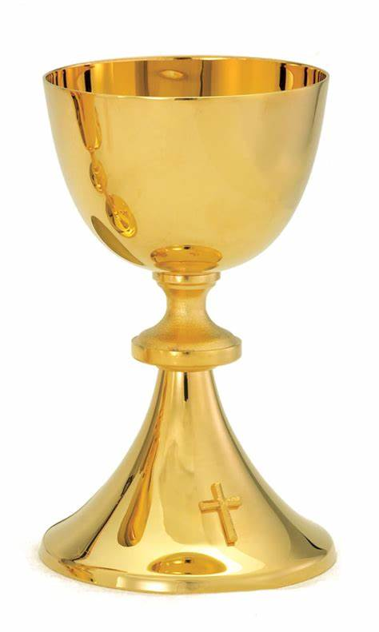
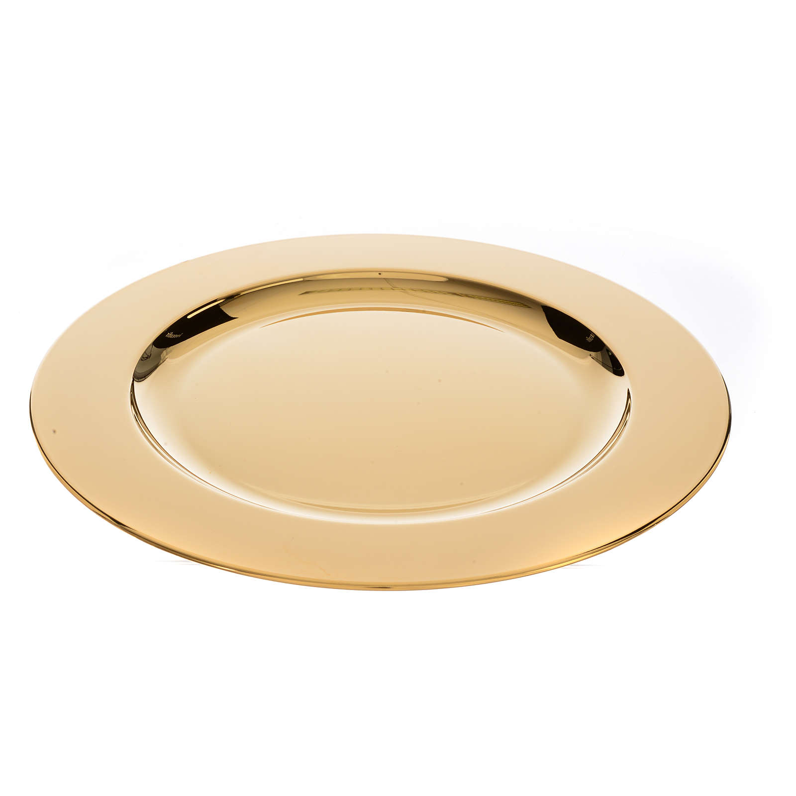
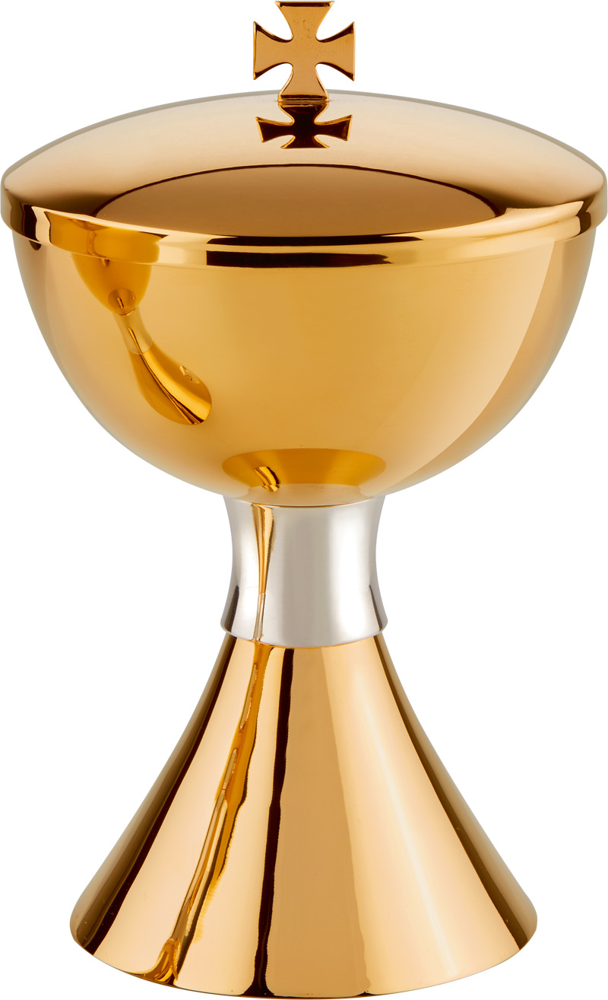
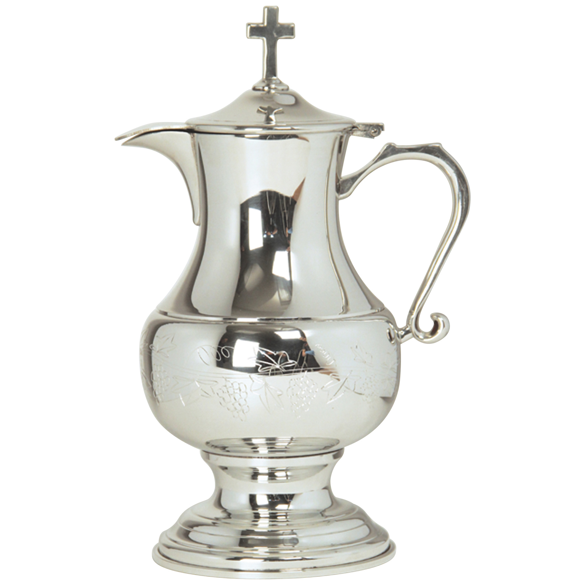
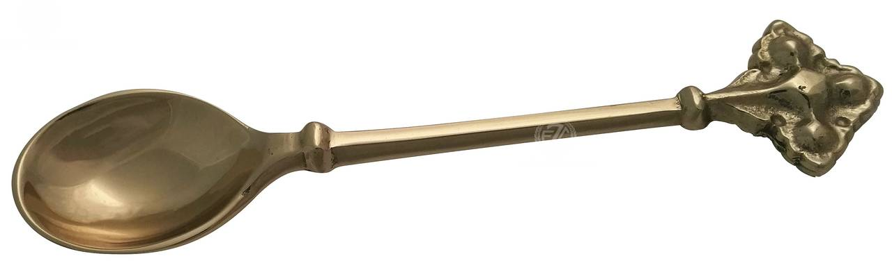
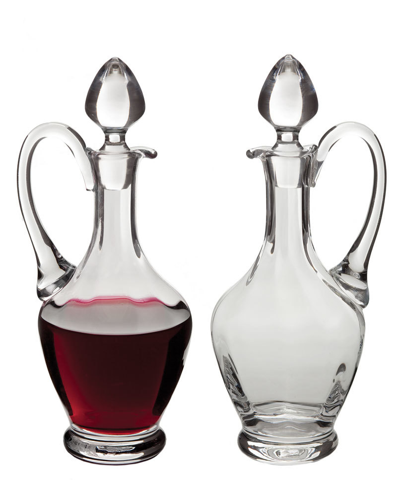
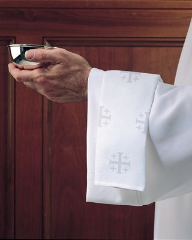
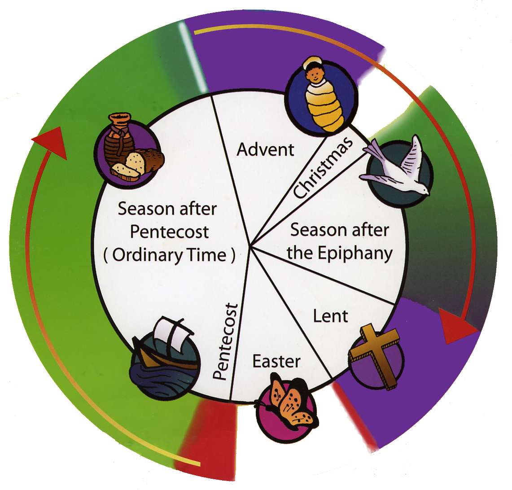
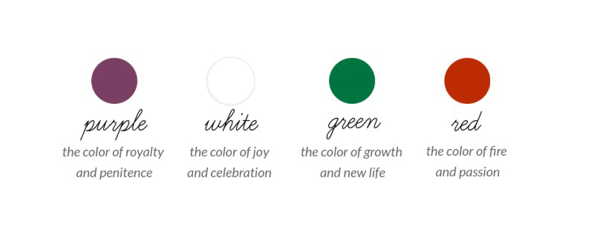

Part One: New Servers
1. Requirements of Being a Server
- One should be willing to serve God and forget the world around.
- One should be willing to obey the rules and custom of the Parish he/she is serving at.
- One should be able to read and write.
- One must have understanding since they will be taught on a day-to-day basis.
2. Saint Laurance: Motto, Aims, Rules, and Promise
Motto
I will go unto the altar of God, even unto God of my joy and gladness.
Aims
- To serve God
- To be present at every sacrament of the Church
- To love my neighbors as myself
- To comfort the needy, suffering, and the sick
Rules
- To respect and to be obedient
- To attend Guild meetings regularly
- To be present and punctual at all services
Promise
I offer myself to God almighty, Blessed Virgin Mary our Mother and to our Holy Patron St. Laurance.
I promise to do my best, to serve regularly with reverence and understanding. To the Glory of God
the service of His church and to my own eternal salvation. Amen.
3. The Investiture Procedure
HEADSERVER: Reverend father in God, I present to you the following persons [read their names from a prepared list] to be admitted as servers at the altar of His church.
PRIEST: Did you take care of that these candidates to be fit and proper persons to be admitted as servers at the altar in the church of God.
HEADSERVER: I have tried and proved them believing so to be.
PRIEST: My beloved what is your desire?
SERVERS: Our desire is to serve at the altar.
PRIEST: Do you promise to be in thought and act in discharge of all your duties?
SERVERS: We do so promise, God being our helper.
PRIEST: Do you promise obedience to the server's rules and to those in authority over you?
SERVERS: We do so promise.
PRIEST: Do you promise regularity and punctuality in the discharge of your duties?
St. Laurance Prayer
Grant we beseech thee, Almighty God, that like thou did enabled Blessed Laurance to be victorious through the fire of torture, so may we have strength to quench the flames? Of our evil desire, through Jesus Christ our Lord. Amen.
PRIEST: Bless, Lord these thy servants as thou did blessed Samuel who was ministered to thee by High Priest Eli, and grant them so devoutly to serve at Thine altar on earth that they may at last be counted worthy to worship at Thine altar in Heaven, through Jesus Christ our Lord. Amen.
6. Sacraments of the Church

The 7 Sacraments are Baptism, Confirmation, Eucharist, Penance and Reconciliation, Anointing of the Sick, Holy Orders, and Matrimony. They are divided into three categories: Sacrament of Initiation, Sacraments of Healing, and Sacraments at the Service of Communion.
9. The sacred vessels used in the celebration of the Holy Communion service are:
The chalice, the paten, the ciborium or pyx(Another name for ciborium), the flagon, the spoon, the water and wine cruets, and the lavabo bowl. The last three vessels are not used everywhere. If possible, all the vessels, with the exception of the wine cruets and the lavabo bowl, should be sterling silver lined with gold. They may also be solid gold and richly ornamented. Some contemporary ornamentation in enamel is very good.
Chalice
The chalice is the single cup that our Lord blessed and from which all drank when He instituted the Sacrament of the Altar. The chalice also is called the cup of blessing, the cup of the Lord, the common cup, and the Communion cup.

Paten
The paten is the plate for the bread. The paten is made to fit into the mouth or rim of the chalice and large enough so that it can be used for the distribution. It is the symbol of the “one bread” broken into pieces. These pieces are called wafers or hosts.

Ciborium or Pyx
The ciborium and the pyx are containers for additional wafers. The ciborium has the shape of a covered chalice and the pyx that of a round covered box, also called a host box. Sometimes the ciborium is used for the distribution in place of the paten, but in that case the paten is still used for the consecration.

Flagon
The flagon is a container for additional wine. Large cruets (see below) are sometimes used in place of a flagon.

Spoon
The spoon is used for the removal of pieces of cork or other matter that may have fallen into the wine. It is needed only very rarely.

Cruet
The cruet is a glass container for water or wine, with a stopper in the shape of a cross. Wine cruets used in place of a flagon are usually much larger than water cruets. A water cruet is used for pouring a little water into the chalice where the traditional mixed chalice (wine mixed with a little water) is retained and where the celebrant cleanses or purifies the chalice and paten ceremonially after the distribution. It is also used with the lavabo ceremony.

Lavabo Bowl & Lavabo Towel
The lavabo bowl holds the water for the ceremonial cleansing of the celebrant’s fingers after the offerings of the people (including the bread and wine) are placed on the altar, the finger's are wiped with the lavabo Towel.. The ceremony is purely symbolic and is connected with the words of Psalm 26:6–7: “I wash my hands in innocence and go around your altar, O Lord, proclaiming thanksgiving aloud, and telling all your wondrous deeds.”

Calendar of the Church Year:

Colors of the Church Year:

Advent:
Jesus is coming.
Christmas:
Jesus is born.
Odinary Time:
Jesus teaches.
Lent:
Jesus will die and rise.
Three days:
Jesus dies, Jesus is crucified.
Easter:
Jesus Rises.
The Altar Table
Preparing the Altar Table for Holy Eucharist:
Make sure Sanctuary is clean.
Place the Fair Linen on the Altar Table.
Pay attention to the liturgical color of the Altar Frontal, lectern and pulpit
hangings. Change them if they are not the proper color for the service.
Step 1
Open the folded Corporal and center it on the
Altar at the edge of the Fair Linen, with the
embroidered cross toward the priest.
Place the chalice in the center of the Corporal.
Step 2
Place the middle third of a folded Purificator over
the Chalice, with the end thirds hanging over each
side of the Chalice.
Step 3
Place the Paten over the Purificator.
Step 4
Place the Priest’s Host (large wafer) in the Paten.
Step 5
Place the Pall over the Host and Paten.
Step 6
Place the Veil over the Pall, so that the front and
back edges touch the Altar Table.
Step 7
Place the Burse on top of the Veiled Chalice, with
opening facing the Celebrant.
Preparing the Credence Table
Cover the Credence Table/Credence
Shelf with a “Credence Cloth”.
Place two Cruets (glass , silver, etc.), one
water (left) and one wine (right), on the
Credence Table, right rear.
Place the Ciborium or Bread Box, filled
with appropriate number of wafers,
center right front.
Place the Lavabo Bowl at the left front. The Lavabo Towel is placed across the bowl
itself or on the Credence Table next to the Lavabo Bowl.
Place the Alms Basin or Alms Bag on a shelf underneath the Credence Table/Shelf;
alternatively, place it on a small table or stool nearby, not on the Altar Table.
A Flagon filled with extra wine may also be
placed on the Credence Table, as needed.
Altar Guild Manual
Glossary
- Sacrament
- A sacred rite recognized as of particular importance and significance in the Church.
- Investiture
- The formal installation of a person into an office or role, often accompanied by ceremonial rites.
- St. Laurence
- A Christian martyr and saint, celebrated for his steadfast faith and courage.
Have a blessed day;)